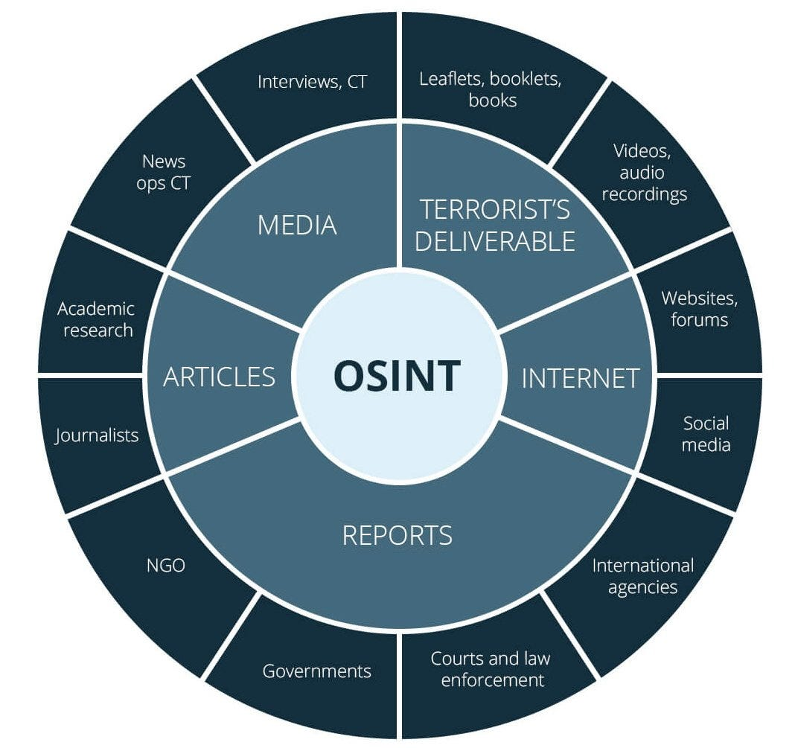

.jpg)
Courses We Offer
OSINT
Discover the intricacies of Open Source Intelligence (OSINT) gathering with our comprehensive course at Learning Hub. Delve into the world of digital investigation as you learn to harness the power of publicly available information to gather insights and intelligence effectively. From mastering advanced search techniques to navigating online databases and social media platforms, our expert instructors will equip you with the skills and tools needed to conduct thorough and ethical OSINT operations. Whether you're a cybersecurity professional, law enforcement officer, journalist, or simply curious about the digital landscape, this course will provide you with valuable knowledge and techniques to excel in the field of intelligence gathering. Join us and unlock the secrets hidden in the vast expanse of open sources!
The Dark Web
Embark on a fascinating journey into the depths of the internet with our captivating course on the Dark Web at Learning Hub. Delve beyond the surface of conventional online spaces as you explore the mysterious realm of hidden networks and encrypted communication channels. Led by seasoned experts, this course will demystify the complexities of the Dark Web, covering topics such as anonymity tools, illicit marketplaces, cybercrime, and emerging trends. Gain valuable insights into the techniques used by cybercriminals and learn how to navigate this clandestine landscape safely and responsibly. Whether you're a cybersecurity professional, law enforcement agent, or simply intrigued by the hidden corners of the internet, this course offers an eye-opening experience that will broaden your understanding of the digital world. Join us and unravel the enigma of the Dark Web today!